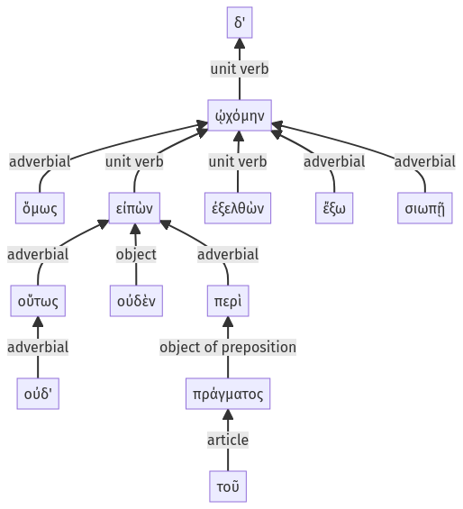

Lysias, Oration 1, 1.14.54-1.14.66a
1.14.40-1.14.53a | 1.15.1-1.15.30a
Sentence 35
1.14.54-1.14.66a
ὅμως δ' οὐδ' οὕτως οὐδὲν εἰπὼν περὶ τοῦ πράγματος ἐξελθὼν ᾠχόμην ἔξω σιωπῇ.
1 ὅμως
2 οὐδ' οὕτως οὐδὲν εἰπὼν περὶ τοῦ πράγματος
2 ἐξελθὼν
1 ᾠχόμην ἔξω σιωπῇ
ὅμως δ' οὐδ' οὕτως οὐδὲν εἰπὼν περὶ τοῦ πράγματος ἐξελθὼν ᾠχόμην ἔξω σιωπῇ.
Highlighting:
- connecting words
- unit verb
- subject
- object
Color code:
- independent clause (level 1, intransitive verb)
- circumstantial participle (level 2, transitive verb)
- circumstantial participle (level 2, intransitive verb)
